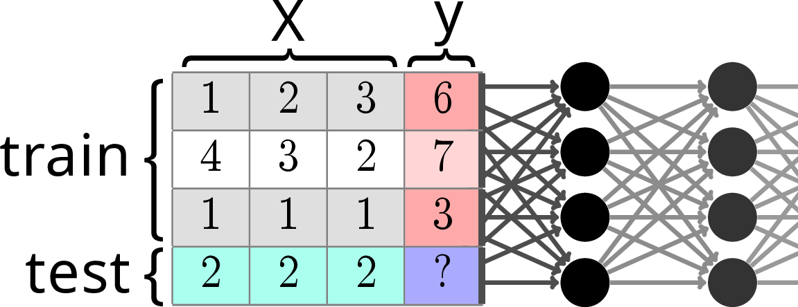
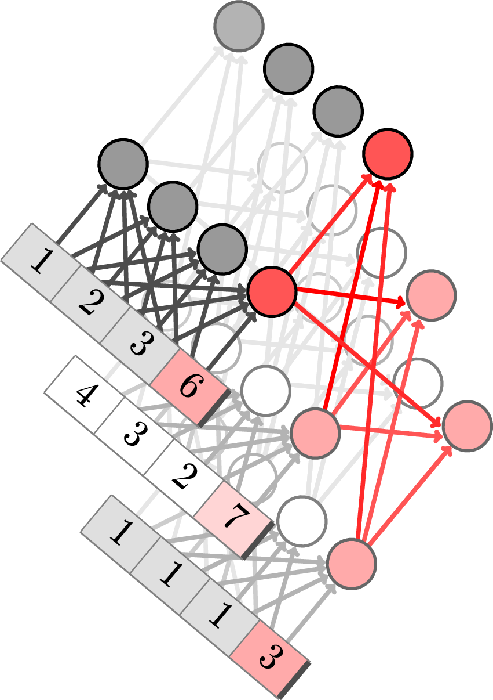
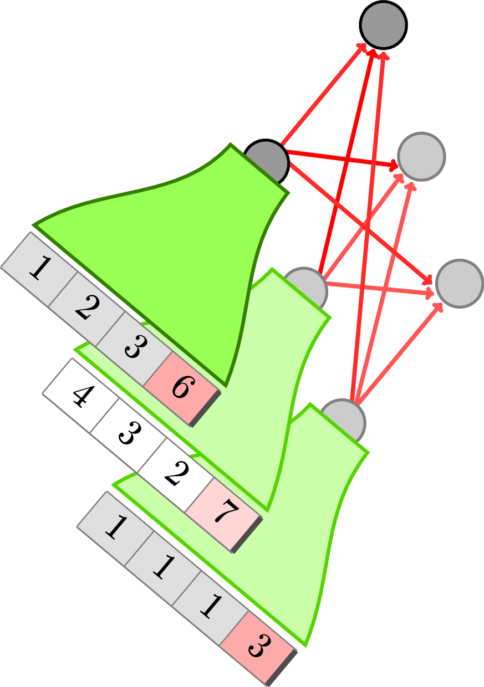
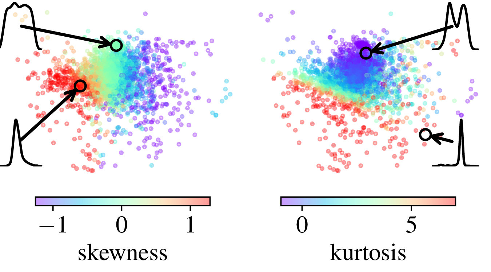
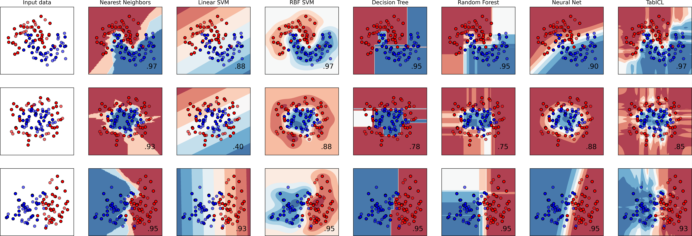
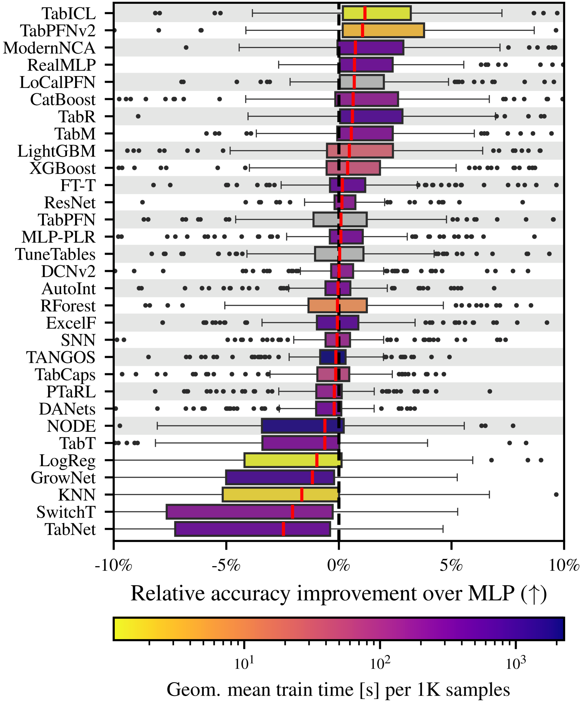
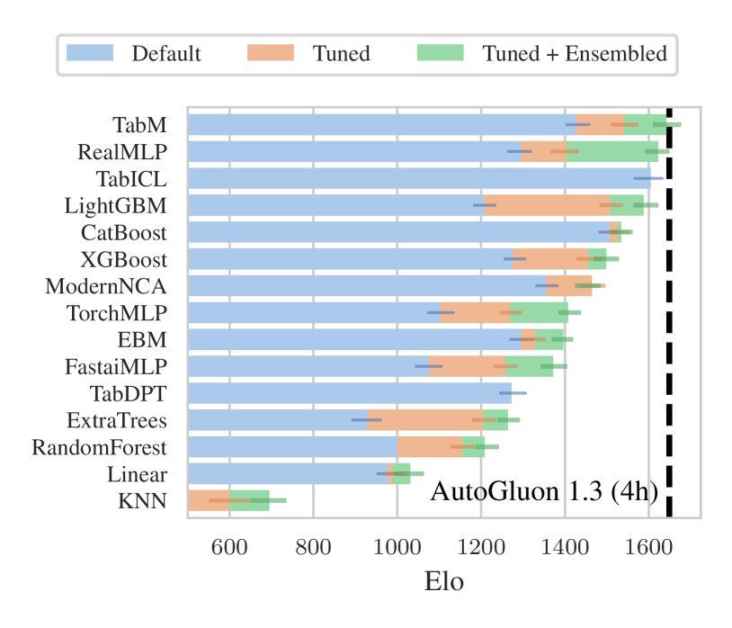
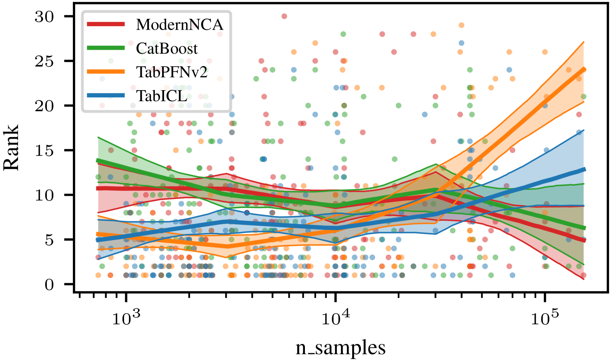

Note
TabICL is a state-of-the-art tabular learner [Qu et al 2025]. The key is it a very rich prior, that is baked in a pre-trained architecture -a table foundation model-, and leveraged by in-context-learning. Thanks to clever choices, it is fast and scalable, efficient even without a GPU.
Contents
Recent progress in tabular learning: In Context Learning
Describing the statistical structure of tables in general is very subtle. They do have some unique statistical feature. For instance, each column is typical meaningful by itself, and more than linear combinations of columns (data non rotationally invariant, cf [Grinsztajn et al, 2022]). For long, tree-based models, in particular gradient-boosted trees, were the models that captured best this statistical structure.
The question is indeed: how to build complex and rich inductive biases into statistical models?
The group of F. Hutter pionneered new answers to this question with their TabPFN work [Hollmann et al, 2025].
Tabular learning as a completion problem

Prediction by table completion using across-row transformers
The key idea behind this line of work is that tabular learning can be seen as completing a table where one column has a missing entry. Transformer-based large-language models are very good at completing sequences, in particular in the few-shot regime. Hence the idea to use a transformer architecture for this table-completion task.
More specifically, this is a meta-learning setting (learning to learn), using transformers.
Sophisticated prior via data generation
Teaching transformers to predict well requires showing them many many prediction problems.
The benefit of this approach is that these prediction problems can be chosen to reflect well the downstream task. In particular, in becomes now easy to bake in any form of inductive bias by simulating data.
TabPFN simulates data by cascading a series of simple transformations combining very few columns. The data-generative processes are actually more subtle, but the idea being that they are plausible for data tables.
Experience (from us and others) shows that pretraining on a quality data-generation process is crucial to produce a good tabular learner, alike foundation models in other settings.
TabICL: improved architecture
The challenge: accounting for the structure of tables

Tables are 2D objects, and the TabPFNv2 architecture alternates attentions across row and across columns
In practice, a table is not a 1D structure, like sentences. It is closer to a 2D structure, with rows and columns. A good architecture will account for this structure, and the TabPFNv2 architecture uses transformers with alternating across-row and across-column attention.
One problem is the computational complexity: attention is quadratic in the number of entries, and the bi-directional transform of TabPFNv2 leads to a cost in O(n p² + p n²) for a table with n rows and p columns.
TabICL’s solution
Rowwise encoding

To break the quadratic cost, TabICL first encodes the rows to a smaller, fixed-sized, represention, before performing across-row in-context learning.
For more scalability and better inductive bias, our model, TabICL, first embeds the rows (using a first transformer) and then does in-context learning across rows (with a second transformer). The resulting computational complexity is O(n p² + n²), which is more scalable, though still quadratic in n and p.
Scalability is important because it enables us to pretrain TabICL on both small and large datasets, and as a consquence TabICL is a good predictor for large datasets.
Column-specific embeddings

To apply different transformations on columns depending on their statistical properties, TabICL builds positional embeddings for columns that capture aspects of their distribution.
Another important innovation of TabICL is that it inputs the entries in the transformer with column-specific embeddings. These column embeddings are computed to be a function of the distribution of the column. For this, we use a set transformer, which is a scalable transformer-like way of building a function on sets (but without the quadratic complexity).
After pretraining, we find that the column embeddings have learned a mapping that implicit captures statistical aspects of the data distribution in the column, as the kurtosis or the skewness.
The result: a powerful and easy to use tabular learner
After a lot of pretraining on very well chosen synthetic data, TabICL is a state-of-the-art tabular. Pretraining gave it the right inductive bias, as visible from the classifier-comparison plot below:

A classic classification comparison plot that shows the decision boundaries on very simple toy data. It is useful to get a feeling of how classifiers behave.
It is interesting to see that while TabICL form very flexible decision boundaries, they do extend along the horizontal and vertical axes, as the decision tree and random forest. These axis-aligned features are a very important aspect of the inductive bias.
At the end of the day, TabICL is an excellent tabular learner, as visible on benchmarks:

TabICL is a great predictor: Comparison of many predictors.

Experimental results, from a benchmark paper independent of the TabICL paper: tabarena [Erickson et al, 2025]
The benefit of TabICL becomes more marked for larger datasets:

Rank (lower is best) as a function of dataset size.
All in all, TabICL is an excellent tabular predictor, and a push forward for tabular foundation models. From a foundamental standpoint, it shows that in-context learning is not only for few-shot learning, but that be very beneficial as sizes as large as n=100 000.
Note
TabICL is only one aspect of table foundation models. We are pursuing also another line of research that focuses on bringing knowledge about the real world in table foundation models, see CARTE and more recently [Kim et al, 2025].